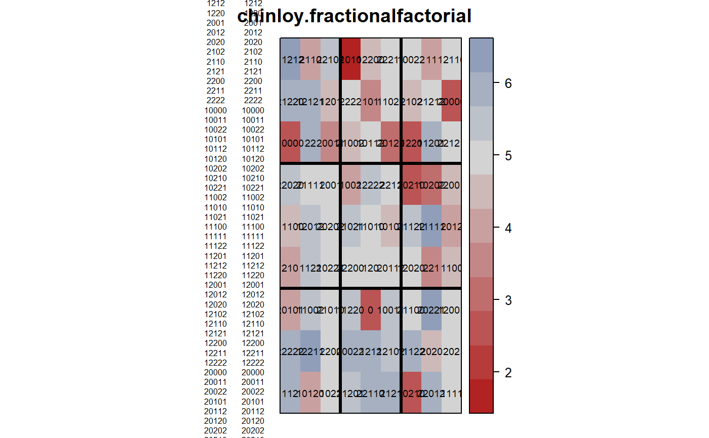

chinloy.fractionalfactorial.RdSugarcane fractional factorial 1/3 3^5.
data("chinloy.fractionalfactorial")
A data frame with 81 observations on the following 10 variables.
yieldyield
blockblock
rowrow position
colcolumn position
trttreatment code
Nnitrogen treatment: 0, 1, 2
Pphosphorous treatment: 0, 1, 2
Kpotassium treatment: 0, 1, 2
Bbagasse treatment: 0, 1, 2
Ffilter press mud treatment: 0, 1, 2
An experiment grown in 1949 at the Worthy Park Estate in Jamaica.
Nitrogen was applied as sulphate of ammonia at 0, 3, 6 hundred-weight per acre.
Phosphorous was applied as superphosphate at 0, 4, 8 hundred-weight per acre.
Potassium was applied as muriate of potash at 0, 1, 2 hundred-weight per acre.
Bagasse applied pre-plant at 0, 20, 40 tons per acre.
Filter press mud applied pre-plant at 0, 10, 20 tons per acre.
Each plot was 18 yards long by 6 yards (3 rows) wide. Plots were arranged in nine columns of nine, a 2-yard space separating plots along the rows and two guard rows separating plots across the rows.
Field width: 6 yards * 9 plots + 4 yards * 8 gaps = 86 yards
Field length: 18 yards * 9 plots + 2 yards * 8 gaps = 178 yards
T. Chinloy, R. F. Innes and D. J. Finney. (1953). An example of fractional replication in an experiment on sugar cane manuring. Journ Agricultural Science, 43, 1-11. https://doi.org/10.1017/S0021859600044567
None
library(agridat) data(chinloy.fractionalfactorial) dat <- chinloy.fractionalfactorial # Treatments are coded with levels 0,1,2. Make sure they are factors dat <- transform(dat, N=factor(N), P=factor(P), K=factor(K), B=factor(B), F=factor(F)) # Experiment layout libs(desplot) desplot(yield ~ col*row, dat, out1=block, text=trt, shorten="no", cex=0.6, aspect=178/86, main="chinloy.fractionalfactorial")# Main effect and some two-way interactions. These match Chinloy table 6. # Not sure how to code terms like P^2K=B^2F m1 <- aov(yield ~ block + N + P + K + B + F + N:P + N:K + N:B + N:F, dat) anova(m1)#> Analysis of Variance Table #> #> Response: yield #> Df Sum Sq Mean Sq F value Pr(>F) #> block 8 10.6223 1.3278 2.9797 0.008942 ** #> N 2 4.5399 2.2699 5.0940 0.010037 * #> P 2 11.9864 5.9932 13.4496 2.517e-05 *** #> K 2 2.5091 1.2546 2.8154 0.070230 . #> B 2 5.2851 2.6426 5.9303 0.005112 ** #> F 2 13.9405 6.9702 15.6422 6.566e-06 *** #> N:P 4 5.0740 1.2685 2.8467 0.034366 * #> N:K 4 1.2432 0.3108 0.6975 0.597636 #> N:B 4 1.9243 0.4811 1.0796 0.377618 #> N:F 4 2.1110 0.5277 1.1843 0.330265 #> Residuals 46 20.4979 0.4456 #> --- #> Signif. codes: 0 '***' 0.001 '**' 0.01 '*' 0.05 '.' 0.1 ' ' 1